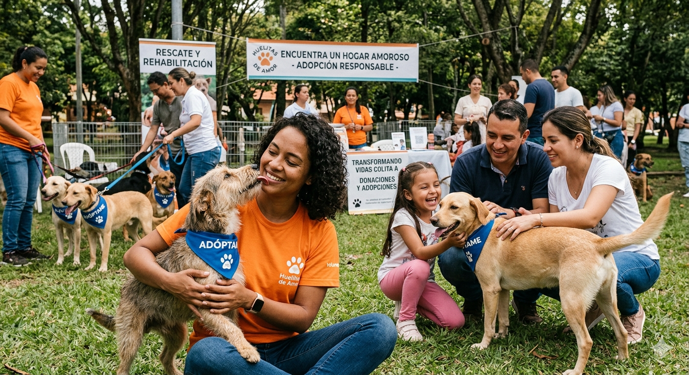
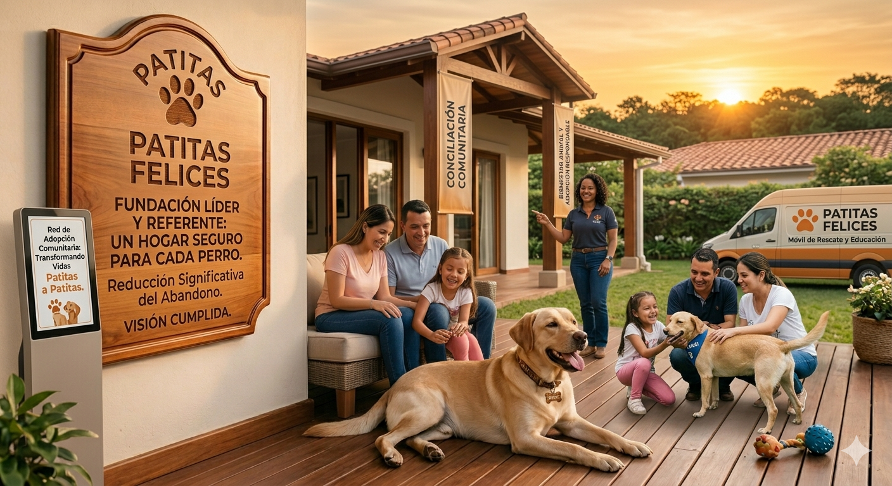
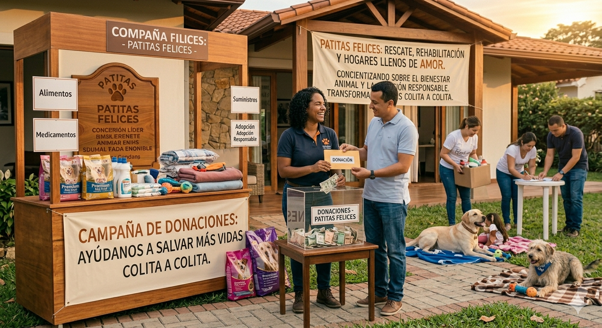
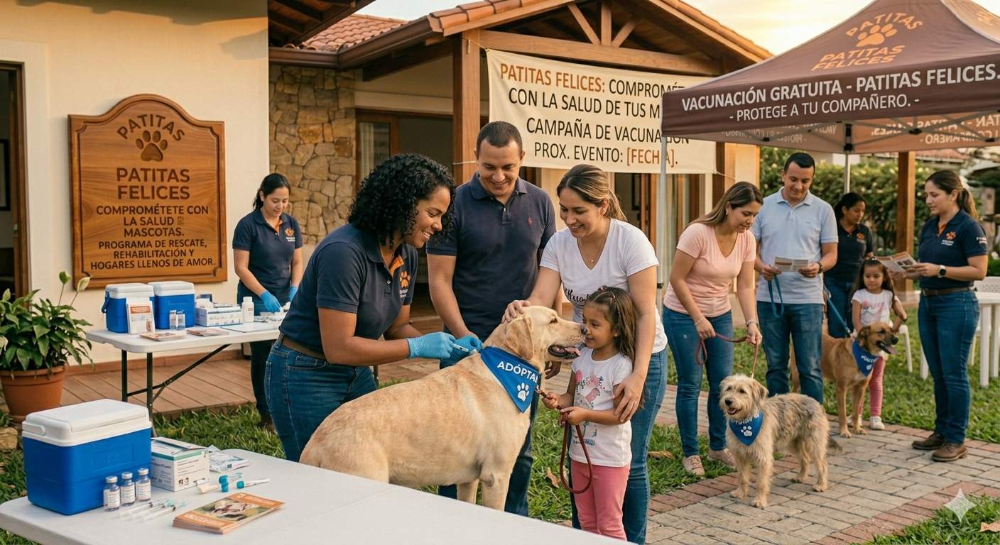

.png)
.png)
.png)
Conócenos

Nuestra Misión
"Somos una organización comprometida con el bienestar animal, enfocada en el rescate, rehabilitación y reubicación de caninos en situación de riesgo o abandono. Promovemos la educación comunitaria y la adopción responsable como pilares fundamentales para erradicar el maltrato y garantizar un futuro digno para cada ejemplar."

Nuestra Visión
Ser una fundación líder y un referente en la protección animal, logrando un impacto significativo en la reducción del abandono callejero. Aspiramos a un futuro donde cada perro tenga un hogar seguro y una familia que lo proteja.

¿Por qué tu apoyo cambia vidas?
Detrás de cada perrito recuperado en Patitas Felices, hay una historia de abandono que logramos transformar gracias a personas como tú. Tu donación no es solo dinero: es el alimento de hoy, la cirugía de emergencia de mañana y la vacuna que les permitirá encontrar un hogar sano. Ellos no pueden pedir ayuda, pero nosotros podemos ser su voz. ¡Súmate y sé parte de su segunda oportunidad!

Jornadas de vacunacion y estrelizacion
Nuestra fundacion patitas felices esta comprometida con nuestros amigos perrunos,cuenta con jornadas de vacunacion y esterilizacion gratis para todos los perritos esto se logra gracias a las donaciones voluntarias de algunas personas que se pasan por nuestra fundacion aqui, en esta pagina tambien puedes donar danos tu granito de arena para seguir con esta gran labaor en la seccion anterior de ¿porque tu apoyo cambia vidas? puedes darle click al boton y te llevara a donde nos puedes depositar.